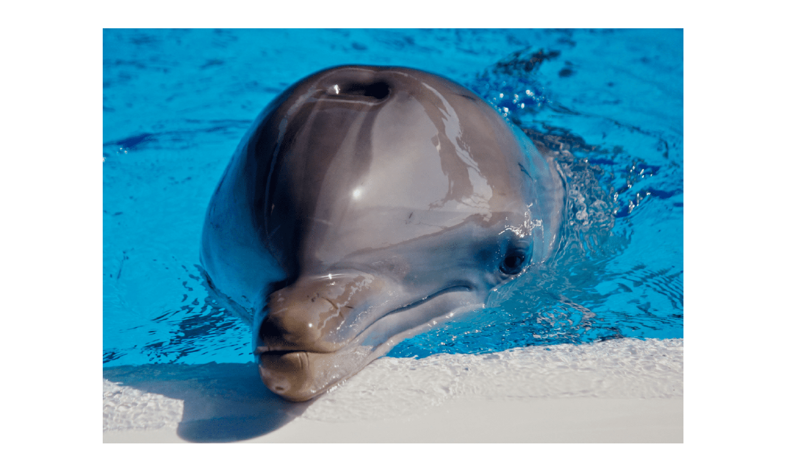
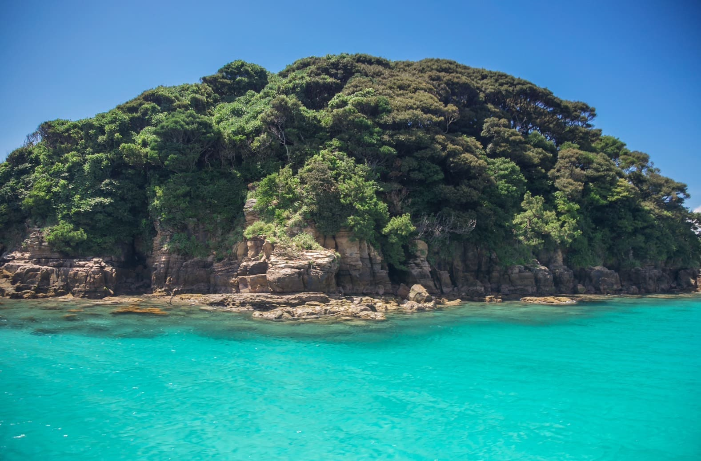

体験

壱岐島は海のアクティビティが盛んでマリンスポーツはもちろん、エメラルドグリーンの海を間近に感じるカヌー体験や絶景の無人島遊覧船、イルカと触れ合いエサやりができる体験など目で見て触れて楽しめる場所がたくさんあります。
辰の島遊覧船

- 
勝本港から渡船で約10分「日本の快水浴場百選」にも認定された透明度抜群のビーチがある無人島。渡船で島に渡りビーチに行くほかに船で海側から絶景をめぐる遊覧船もあります。切り立つ断崖を海から眺める非日常、吸い込まれそうなエメラルドの海をぜひ一度体験してみてください。
| 住所 | 東京都目黒区目黒2-10-8 第2アトモスフィア青山 5F・7F |
|---|---|
| 電話番号 | 03-5759-3225(辰の島遊覧渡船営業所） | 営業時間 | 遊覧 9:05発～最終15:35発 渡船 9:00発～最終15:30発 |
| 料金 | 渡船 大人1,000円 小人500円 往復料金） 遊覧 大人2,000円 小人1,000円 |
| アクセス | 郷ノ浦港から車で約30分、芦辺港から車で約20分 |
| 駐車場 | 有り（５０台） |
イルカの海公園
天然の入り江を仕切ってできた海浜公園。イルカにタッチしたりご飯をあげられる体験ができファミリー旅行者や女子旅に人気のスポットとなっています。敷地内にはカフェもありふわとろのパンケーキや「壱岐牛」などの地元食材を使ったフードメニューも堪能できます。また近くにはキャンプ施設もあり海の近くでデイキャンプなどをすることができます。
| 住所 | 東京都目黒区目黒2-10-8 第2アトモスフィア青山 5F・7F |
|---|---|
| 電話番号 | 03-5759-3225 | 営業時間 | 9:30～17:30 |
| 料金 | 大人1,000円／中学生以下500円／島内の方無料 （島民カード提示） |
| アクセス | 郷ノ浦港から車で約30分。バスで約50分（最寄のバス停「イルカパーク」または「天ヶ原」） |
| 駐車場 | 有り |